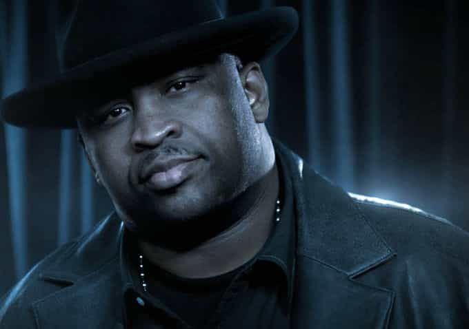

It was Oscar Wilde who famously said “If you want to tell people the truth, make them laugh. Otherwise they’ll kill you.” Gone too soon from this world, Patrice O’Neal comes to mind whenever I hear this quotation. Patrice’s blend of genius insight into gender relations, infectious laugh and delivery, and ability to break down social issues made him one of the most well-respected comedians in the business. Patrice spit the kind of universal truths that would get another man excluded from society, but did it in such a way that he brought joy into many lives and created valuable learning experiences for anyone willing to listen.
Perhaps the most distilled examples of Patrice’s worldview occurred while he was hosting the Black Phillip Show. This short-lived radio program was intended to be a parody of Dr. Phil-type self help shows, dispensing relationship, dating, and game advice for men. All 13 episodes of the show are available for streaming on Youtube:
Here are some choice excerpts, all from just from the first hour of Episode 1:
Patrice is telling a story about how his girl was subtly testing his manhood:
“Women have two things in their head. They have the thing that makes them go ‘I LOVE you. You’re a MAN. You’re bigger than me, stronger than me, I can’t even open this pickle jar without you.’ And then it’s the other side of their brain that goes ‘You faggot ass bitch, why are you loving this motherfucker so much?’ So what they want is the girl shit at the expense of your manhood […] Women don’t know how to tap into a man’s desire [to help them].”
[To the female co-host] “Women are not born in honesty. You don’t need to be. You don’t need to have charisma or figure it all out. Men have developed a lot of different verbal skills that women haven’t because you haven’t had to. There’s no need for you to have […] conversational ability. And when you do have conversational ability, you FORCE it on guys. Because you know that most women don’t [have it].
“Here’s something that will work 99 percent of the time: If she says ‘here’s what I think,’ all you have to do to combat her is go: ‘Why? She never has the thought that is the purpose for her thought. There is never reasoning. Guys always have a reason behind what they’re saying.”

“You have to not be afraid to take a loss to get your point across. When she gives you that ultimatum, if you look like you’re sweating and you’re blinking and you’re nervous about her leaving, she will take advantage of that.”
“Stop trying to give her things to make her happy. You have to say, ‘Look sweetie, this is how it is.’ You have to be ready for her to walk out of your life. You ever see that movie Heat? Don’t get involved in something you can’t walk out on in less than 30 seconds.”
“One thing women need from you is emotions. […]. If you [calmly deflect them], her emotions have to eat on themselves. Let her emotions eat her soul up, then she’ll think of another option because she’s not walking out of your life unless you’re crushed. Women don’t leave unless you are completely crushed […] She won’t take a step.”
A caller says that his wife no longer has sex with him, and he is debating cheating on her at a friend’s bachelor party:
“You can’t love a woman like a woman loves you […] You can’t go ‘boobie bear’, you can’t hold her hand the way she’s holding yours. It’s a distance thing. […] You gotta make her chase you. Stay gone for a couple days.”
“There’s a righteous fuck and a dishonest fuck. […] If you’re gonna go to this bachelor party and get some righteous pussy, don’t even look back because it’s not about her. […] They don’t want what the can have, and right now she has you. Even in your attempt to be evil, you still have kind of a worthless self-image. You can’t cheat and be thinking about how you’re hurting her. If cheating on her helps your self esteem, you do it but you do it righteously to help YOU.”
A caller asks if there’s a way to pre-screen for materialist girls before investing time/money in them:
“Most loser women, all they have to barter is their pussy. Men have so many other things to barter when it comes to the sex game and the relationship game. It’s not their fault, because they all do it, so there has to be nature involved.”
“We have other things that make us attractive to women. Initially, there’s only one thing that makes them attractive to us, and that’s fucking them, and then it builds from there.”
“You gotta understand that when you meet these women essentially they are losers. She HAS to get something out of her pussy, dude. She has to get dinner. She has to get a movie. How can she function if she doesn’t get something out of what she has?”
“When you’re taking her out to dinner and to the movies, that’s her way of fucking you. If you take her out 5 times, she’s fucked you 5 times, and you haven’t fucked her yet […] Don’t let them fuck you, because dinner/movie time is them fucking you. Are you a whore? You can’t let a woman whore out your time.”
Patrice is a comedian at his core, so this stuff is guaranteed to make you laugh. More importantly, though, it will make you more attuned to an unspoken battlefield of gender relations few others are willing to address so candidly. This is a guy who gamed women, made every mistake in the book during his youth, and witnessed firsthand the interplay between fame, money, game, and confidence. Whether you’re a veteran needing a refresher or a newbie looking to gain some power in your dealings with the opposite sex, the Black Phillip archives is an excellent place to continue your research.
Don’t Miss: You’ve Already Seen One Of The Greatest Red Pill Movies Ever Made